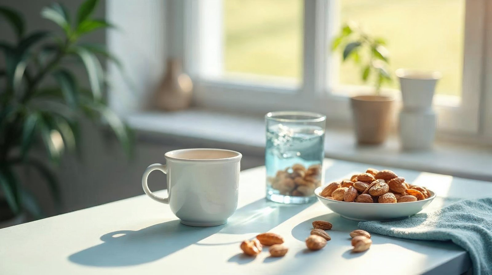
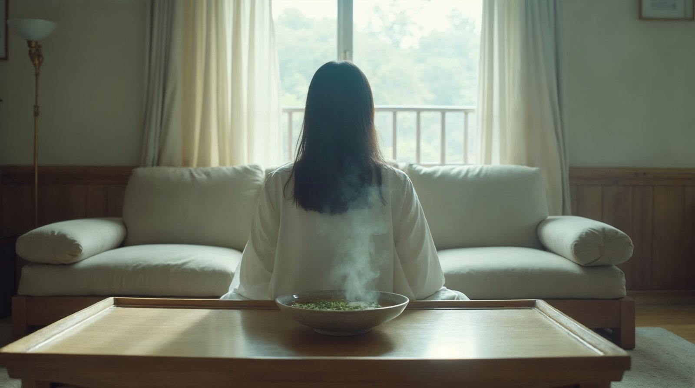
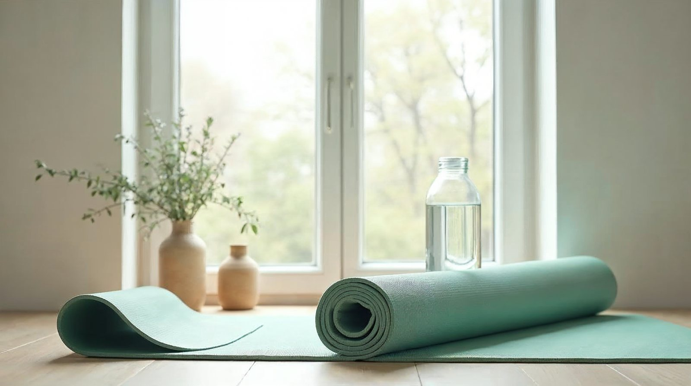
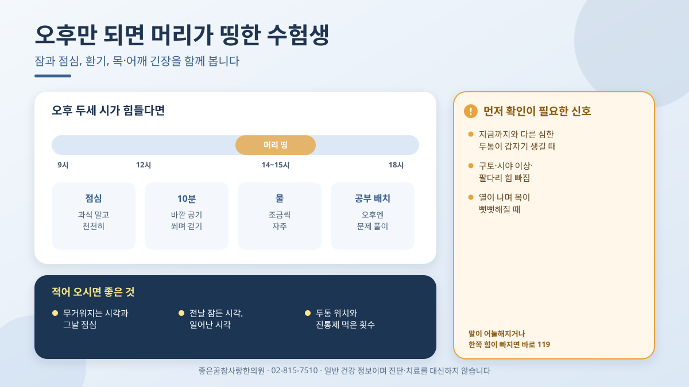

이종호 한의사 감수좋은꿈참사랑한의원 대표원장 (한의사 면허번호 19769)발행 2026-11-24 · 수정 2026-11-26
이 글의 차례
- 왜 이런 불편이 생길 수 있나요
- 왜 하필 오후 두세 시일까요?
- 머리가 띵한 느낌은 어떤 모습으로 나타나나요?
- 비슷해 보이지만 따로 살펴야 하는 경우
- 상황별 예시
- 스스로 점검해 보세요
- 먼저 이렇게 여쭙니다
- 일상에서 먼저 해 볼 수 있는 것
- 공부 자리의 공기와 빛도 살펴보세요
- 점심은 이렇게 먹어 보세요
- 오후 공부 시간표를 바꿔 보세요
- 짧은 낮잠은 어떻게 활용하나요?
- 목과 어깨를 풀어 주는 2분
- 물과 카페인은 어떻게 조절할까요?
- 밤잠은 어떻게 바꿔 볼까요?
- 몇 주에 걸쳐 이렇게 바꿔 갑니다
- 시험 긴장도 오후 머리를 무겁게 할까요?
- 한의학에서는 어떻게 보나요?
- 한의원에서 함께 살필 수 있는 경우
- 이렇게 기록해 오시면 상담이 쉬워집니다
- 이런 증상은 먼저 확인이 필요합니다
- 관련 글
점심을 가볍게 먹고 오후에 잠깐 바깥 공기를 쐬며 걷는 것부터 해 보면 오후 머리 무거움을 덜 수 있습니다. 오전에는 괜찮은데 오후 두세 시만 되면 머리가 띵하고 글자가 안 들어온다는 말을 노량진 수험생들에게 자주 듣습니다.
점심을 먹고 자습실로 돌아와 앉았는데 눈꺼풀은 무겁고 문제집 글자는 겉도는 오후를 떠올려 보세요. 오전에 세운 계획이 오후마다 흔들리니 얼마나 답답하실까 싶습니다.
집중력이 약해서 그런 건 아닌지 걱정하며 묻는 분도 계십니다. 그런데 이야기를 들어 보면 짧은 잠, 급하게 먹은 점심, 환기 안 되는 자습실, 굳은 목과 어깨가 한꺼번에 겹친 경우가 많습니다. 집중력 탓을 하기 전에 오후를 무겁게 만드는 조건부터 하나씩 덜어 내 보시면 좋겠습니다.
왜 이런 불편이 생길 수 있나요
- 점심을 많이 먹거나 급하게 먹으면 오후에 나른하고 머리가 무겁게 느껴지는 분이 있습니다.
- 환기가 안 되는 공간에 오래 있으면 공기가 답답해 머리가 띵해지기도 합니다.
- 밤잠이 부족하면 오후 졸음과 집중 저하가 더 뚜렷해집니다.
- 오래 앉아 고개를 숙이고 있으면 목과 어깨가 굳어 머리 무거움으로 이어질 수 있습니다.
- 물을 거의 마시지 않고 커피로만 버티면 오후에 머리가 더 멍하다는 분도 있습니다.
왜 하필 오후 두세 시일까요?
사람의 몸은 하루 가운데 이른 오후에 한 번 졸음이 몰려오는 리듬이 있다고 알려져 있습니다. 점심 식사가 끝난 시각과 겹치면 그 졸음이 더 크게 느껴집니다.
여기에 오전 내내 같은 자세로 앉아 있던 목과 어깨의 긴장이 쌓이고, 자습실 공기는 점점 답답해집니다. 전날 잠이 짧았다면 이 모든 것이 한꺼번에 드러나는 때가 바로 오후 두세 시입니다. 그래서 이 시간대를 어떻게 보내느냐가 오후 공부의 질을 크게 좌우합니다.
머리가 띵한 느낌은 어떤 모습으로 나타나나요?
같은 "머리가 무겁다"라도 모습에 따라 살필 방향이 조금씩 달라집니다. 어디에 가까운지 떠올려 보세요.
- 머리 전체가 솜으로 싸인 듯 멍하고 졸음이 함께 오는 경우
- 뒷머리와 목 뒤가 무겁고 어깨까지 뻐근한 경우
- 관자놀이나 이마가 조이듯 아프고 눈이 피로한 경우
- 한쪽 머리가 욱신거리고 빛이나 소리에 예민해지는 경우
- 머리가 무거우면서 속이 더부룩하고 입맛이 없는 경우
졸음과 함께 오는 멍함이라면 잠과 점심을, 뒷머리와 목이 함께 무겁다면 자세와 근육 긴장을, 욱신거림과 예민함이 있다면 두통의 흐름을 더 자세히 살핍니다.
비슷해 보이지만 따로 살펴야 하는 경우
오후 머리 무거움은 생활 리듬과 자세에서 오는 경우가 많지만, 다른 곳을 먼저 살펴야 할 때도 있습니다. 코가 막히면서 이마나 광대 쪽이 묵직하다면 이비인후과에서, 안경이나 렌즈를 바꾼 뒤부터 머리가 아프다면 안과에서 먼저 확인해 보세요.
오후뿐 아니라 하루 종일 기운이 없고 어지럽거나 숨이 찬 날이 이어진다면, 생활 습관을 바꿔 보기 전에 병원에서 기본 검사를 먼저 받아 보시길 권합니다.
상황별 예시
- 예를 들어 점심을 학원가 식당에서 10분 만에 먹고 바로 자습실로 돌아가는 경우, 두 시쯤부터 눈꺼풀이 무겁고 머리가 멍해질 수 있습니다. 같은 메뉴라도 양을 조금 줄이고 천천히 먹은 뒤 5~10분 걷고 들어가 보세요.
- 예를 들어 창문이 없는 독서실 칸막이 안에서 하루 종일 공부하는 경우, 오후로 갈수록 공기가 답답해 머리가 띵해지기 쉽습니다. 쉬는 시간마다 건물 밖이나 복도 끝 창가로 나가 바람을 쐬어 보세요.
- 예를 들어 새벽 한두 시에 자고 일곱 시에 일어나는 날이 이어지는 경우, 오후 졸음과 머리 무거움이 매일 같은 시간에 찾아오기 쉽습니다. 잠드는 시각을 30분만 당겨 보는 것부터 시작해 볼 수 있습니다.
스스로 점검해 보세요
- 밤잠이 여섯 시간보다 짧은 날이 많다
- 점심을 15분 안에 먹고 바로 앉는다
- 공부하는 곳이 창문이 없거나 환기가 잘 안 된다
- 오후에 물보다 커피나 단 음료를 더 많이 마신다
- 머리가 무거울 때 목과 어깨도 함께 뻐근하다
- 일주일에 두 번 넘게 두통약을 먹는다
세 가지 이상 해당된다면 오후를 무겁게 만드는 조건이 겹쳐 있을 수 있습니다. 하나씩 바꿔 보고, 몇 주가 지나도 같은 흐름이라면 진료 때 이 목록을 함께 보며 이야기를 나누면 좋습니다.

먼저 이렇게 여쭙니다
- 밤에 몇 시간 정도 자나요?
- 점심은 무엇을, 얼마나 드시나요?
- 공부하는 곳의 환기는 잘 되나요?
- 오후에 물을 얼마나 마시나요?
- 머리가 무거울 때 목이나 어깨도 함께 뻐근한가요?
- 주말이나 쉬는 날에도 오후에 머리가 무거운가요?
쉬는 날의 모습을 여쭙는 것은 공부 환경과 몸 자체의 리듬을 나눠 보기 위해서입니다. 쉬는 날엔 괜찮다면 공부 자리와 일과를, 쉬는 날에도 같다면 잠과 몸 상태를 더 살핍니다.
일상에서 먼저 해 볼 수 있는 것
- 점심은 과식하지 않고 천천히 먹기
- 오후에 10분 정도 바깥 공기 쐬며 걷기
- 물을 조금씩 자주 마시기
- 오후에는 암기보다 문제 풀이처럼 손을 쓰는 공부 배치하기
- 오후 공부 자리 근처 창문을 쉬는 시간마다 잠깐 열어 환기하기
- 쉬는 시간에는 휴대폰 화면 대신 창밖이나 먼 곳 바라보기
공부 자리의 공기와 빛도 살펴보세요
같은 시간을 공부해도 자리에 따라 오후 머리 상태가 다르다는 분이 많습니다. 공기와 빛, 온도는 생각보다 크게 영향을 줍니다.
- 난방이 강해 덥고 건조한 자리는 머리가 더 쉽게 띵해지니 겉옷을 벗어 체온 조절하기
- 조명이 어두우면 눈에 힘이 들어가 머리가 무거워지기 쉬우니 스탠드 밝기 맞추기
- 마스크를 오래 쓰고 있었다면 바깥에서 잠깐 벗고 숨 고르기
점심은 이렇게 먹어 보세요
오후 머리 무거움을 줄이는 데 가장 먼저 바꿔 볼 것은 점심입니다. 거르면 기운이 떨어지고 많이 먹으면 나른해지니, 양과 속도, 구성을 조금씩 조절해 봅니다.
- 배가 80% 정도 찼다 싶을 때 수저 내려놓기
- 밥이나 면만 먹기보다 단백질 반찬과 채소를 함께 먹기
- 국물과 짠 반찬은 조금 줄이기
- 한 끼에 적어도 15분은 들이기
달고 기름진 메뉴를 많이 먹은 날 오후가 유난히 무거웠다면 그 메뉴를 기록해 두세요. 나에게 맞는 점심이 무엇인지 스스로 찾는 데 도움이 됩니다.
오후 공부 시간표를 바꿔 보세요
머리가 무거운 시간에 가장 어려운 공부를 붙잡고 있으면 효율도 떨어지고 스트레스만 커집니다. 하루 리듬에 맞춰 공부 순서를 바꿔 보는 것도 방법입니다.
- 오전: 새로운 개념 익히기, 어려운 이론 읽기
- 점심 직후: 문제 풀이, 오답 정리, 필기처럼 손을 쓰는 공부
- 오후 서너 시: 짧은 산책 뒤 암기 복습
- 저녁: 하루 정리와 다음 날 계획
몸의 리듬에 맞춰 순서만 바꿔도 덜 지칠 수 있습니다. 머리가 무거운 시간을 아예 버리는 시간으로 생각하지 말고, 덜 집중해도 되는 공부를 그 자리에 넣는다고 생각해 보세요.
짧은 낮잠은 어떻게 활용하나요?
정말 졸음이 쏟아진다면 억지로 버티기보다 짧게 쉬어 가는 것도 방법입니다. 다만 길게 자면 오히려 머리가 더 무겁고 밤잠이 흐트러질 수 있어 몇 가지를 지켜 주세요.
- 20분 이내로 알람을 맞추고 쉬기
- 오후 세 시 이후에는 낮잠 피하기
- 엎드려 잘 때는 팔 위에 얼굴을 묻기보다 목베개나 쿠션으로 목을 받치기
- 깨고 나서 바로 공부하기보다 물 한 잔 마시고 잠깐 걷기
- 낮잠 전에 커피를 마시지 않기
목과 어깨를 풀어 주는 2분
뒷머리와 목이 함께 무겁다면, 오전 내내 굳어 있던 목과 어깨를 잠깐 움직여 주는 것부터 해 볼 수 있습니다.
- 턱을 살짝 당긴 채 고개를 좌우로 천천히 기울여 10초씩 버티기
- 양손 엄지로 뒷머리 아래 오목한 곳을 지그시 누르며 천천히 숨 내쉬기
- 어깨를 크게 뒤로 다섯 번 돌리기
- 의자에서 일어나 양팔을 머리 위로 쭉 뻗고 기지개 켜기
아프지 않은 범위에서 천천히 하고, 어지럽거나 저림이 생기면 멈춰 주세요.
물과 카페인은 어떻게 조절할까요?
오후에 머리가 멍할 때 가장 먼저 손이 가는 것이 커피와 에너지 음료입니다. 잠깐은 깨는 느낌이 들지만, 늦은 오후에 마신 카페인은 밤잠을 얕게 하고, 얕은 잠은 다음 날 오후를 다시 무겁게 만드는 고리가 되기 쉽습니다.
- 커피는 오전과 점심 직후로 하루 한두 잔 안에서 마시기
- 오후 세 시 이후에는 보리차, 물, 카페인 없는 차로 바꾸기
- 물병을 책상 위에 두고 한 시간에 몇 모금씩 마시기
- 에너지 음료와 커피를 같은 날 겹쳐 마시지 않기
물을 자주 마시면 자연스럽게 화장실에 가느라 일어나게 되어, 오래 앉아 있는 시간도 함께 끊어지는 장점이 있습니다.
밤잠은 어떻게 바꿔 볼까요?
오후 머리 무거움의 바탕에는 짧거나 얕은 밤잠이 있는 경우가 많습니다. 공부 시간을 줄이지 않고도 잠의 질을 조금 높이는 방법이 있습니다.
- 잠드는 시각과 일어나는 시각을 주말에도 크게 바꾸지 않기
- 잠들기 한 시간 전에는 휴대폰과 문제집을 내려놓기
- 늦은 밤 야식과 술은 피하기
- 아침에 일어나면 커튼을 열거나 밖에 나가 햇빛 쐬기
아침 햇빛은 몸의 하루 리듬을 맞추는 데 도움이 된다고 알려져 있습니다. 학원 가는 길을 조금 걸어서 가는 것부터 시작해도 좋습니다.
몇 주에 걸쳐 이렇게 바꿔 갑니다
위에 적은 방법을 한꺼번에 다 지키려 하면 오래가기 어렵습니다. 저는 큰 목표를 한 번에 드리기보다 해낼 수 있는 만큼을 함께 정하는 편입니다. 한 주에 하나만 골라 이어 가 보세요.
사람은 생각보다 쉽게 낙담합니다. 시험 준비로 하루가 빠듯한 분일수록 더 그렇습니다. 못 지킨 날이 생겨도 스스로를 탓하지 말고, 다음 날 다시 하면 됩니다.
시험 긴장도 오후 머리를 무겁게 할까요?
모의고사가 다가오거나 성적이 기대에 못 미친 주에는 오후 머리 무거움이 더 심하다는 분이 많습니다. 걱정이 많으면 어깨와 턱에 힘이 들어가고 숨이 얕아져, 목과 머리 쪽 긴장이 쌓이기 쉽기 때문입니다.
공부하다 이를 꽉 물고 있거나 어깨가 올라가 있지 않은지 한 시간에 한 번씩 확인해 보세요. 그럴 때는 편안하게 들이쉬고 조금 길게 내쉬는 호흡을 몇 번 해 봅니다. 어지러우면 바로 멈추시면 됩니다.
한의학에서는 어떻게 보나요?
한의학에서는 오후에 머리가 무겁고 띵한 모습을 몸의 습한 기운이 머리를 덮은 듯한 상태나 기운이 위로 잘 올라가지 못하는 상태로 보기도 합니다. 소화가 약해 먹고 나면 늘어지는 분, 생각이 많아 목과 어깨가 굳는 분 등 사람마다 바탕이 달라 맥과 혀, 소화, 잠을 함께 살핍니다.
맥을 짚어 보면 손끝에 거문고 줄처럼 팽팽하게 닿는 분이 있고, 쟁반 위 구슬처럼 매끄럽게 구르는 분도 있습니다. 한의학에서는 앞의 것을 긴장과 피로가 쌓인 쪽으로, 뒤의 것을 소화 부담 쪽으로 살핍니다.
다만 저는 맥을 지금 몸이 어떻게 버티고 있는지 비춰 주는 그림자로 여깁니다. 그래서 맥 하나로 결론을 내리지 않고, 혀를 보고 점심과 잠 이야기를 함께 듣습니다.
같은 오후 머리 무거움이라도 어떤 분은 점심과 소화를, 어떤 분은 잠과 긴장을, 어떤 분은 목과 어깨를 먼저 손보게 됩니다. 나에게 맞는 순서를 찾는 것이 진료의 첫걸음입니다.

한의원에서 함께 살필 수 있는 경우
- 오후마다 머리가 무거운 경우 잠과 식사, 목·어깨 긴장을 함께 살핍니다.
- 집중이 떨어지고 쉽게 지치는 경우 생활 리듬과 피로를 함께 살핍니다.
- 두통이 잦은 경우 언제 어떻게 아픈지 기록과 함께 살핍니다.
좋은꿈참사랑한의원에서는 모든 분께 맥을 짚으며 불편이 언제, 어떻게 나타나는지 여쭙고, 필요하다고 판단될 때 설진을 더해 몸 상태를 살피며 목·어깨의 긴장도 함께 확인합니다. 상태에 맞춰 침·약침·한약 상담 등을 정하고, 귀가 전에는 기록해 볼 점과 다음에 확인할 일을 알려 드립니다.
저는 잘 먹고, 잘 싸고, 잘 자고, 마음 편하고, 몸 따뜻하게, 이 다섯 가지를 몸이 회복하는 바탕으로 봅니다. 시험을 준비하는 동안에는 점심이 급해지고 잠이 줄고 마음이 쫓기기 쉬워, 머리 때문에 오신 분께도 식사와 잠, 대변까지 여쭙습니다.
한약을 상담할 때는 지금 드시는 약과 두통약을 먼저 확인합니다. 처방받은 약은 처방한 의사와 상의 없이 줄이거나 끊지 마세요.

이렇게 기록해 오시면 상담이 쉬워집니다
- 머리가 무거워지는 시각과 그날 점심 메뉴·양
- 전날 잠든 시각과 일어난 시각
- 공부 장소의 환기 상태와 오후에 마신 물의 양
- 두통의 위치와 진통제를 먹은 횟수
일주일 동안 "잠 5시간, 점심 국밥 빨리, 오후 2시 띵함 심함, 물 2컵"처럼 한 줄씩 적어 보세요. 머리가 가벼웠던 날과 무거웠던 날을 나란히 놓고 보면 나에게 크게 영향을 주는 조건이 조금씩 보이기 시작합니다.
다음에 오시면 머리가 무거워지는 시각과 그날 점심, 전날 잠든 시각부터 여쭙겠습니다. 오후 두 시의 무거움이 집중력 탓만은 아닐 수 있으니, 오늘은 점심 뒤 십 분만 바깥 공기를 쐬어 보시길 바랍니다.
이런 증상은 먼저 확인이 필요합니다
- 지금까지와 다른 심한 두통이 갑자기 생긴 경우
- 두통과 함께 구토나 시야 이상, 말이 어눌해지거나 팔다리 힘이 빠지는 것 가운데 하나라도 있는 경우
이런 신호가 있으면 한의원보다 가까운 병원이나 응급실을 먼저 찾으세요.
관련 글
- 공부하다 오후에 졸음이 몰려올 때는 어떻게 살펴보나요?
- 커피와 에너지 음료로 버티다 밤에 잠이 안 올 때는 어떻게 하나요?
- 스터디카페 낮은 책상에서 고개를 숙여 공부하면 등 위쪽이 뻐근할 때는?

여쭙는 것
- 밤에 몇 시간 정도 자나요?
- 점심은 무엇을, 얼마나 드시나요?
- 공부하는 곳의 환기는 잘 되나요?
생활에서 해 볼 것
- 점심은 과식하지 않고 천천히 먹기
- 오후에 10분 정도 바깥 공기 쐬며 걷기
- 물을 조금씩 자주 마시기
한의원에서 함께 살필 것
- 오후마다 머리가 무거운 경우 잠과 식사, 목·어깨 긴장을 함께 살핍니다.
- 집중이 떨어지고 쉽게 지치는 경우 생활 리듬과 피로를 함께 살핍니다.
- 두통이 잦은 경우 언제 어떻게 아픈지 기록과 함께 살핍니다.
먼저 확인이 필요한 신호
- 지금까지와 다른 심한 두통이 갑자기 생긴 경우
- 두통과 함께 구토나 시야 이상, 말이 어눌해지거나 팔다리 힘이 빠지는 것 가운데 하…
한눈에 보는 표
| 구분 | 핵심 |
|---|---|
| 여쭙는 것 | 밤에 몇 시간 정도 자나요? 점심은 무엇을, 얼마나 드시나요? |
| 생활에서 해 볼 것 | 점심은 과식하지 않고 천천히 먹기 오후에 10분 정도 바깥 공기 쐬며 걷기 |
| 한의원에서 함께 살필 것 | 오후마다 머리가 무거운 경우 잠과 식사, 목·어깨 긴장을 함께 살핍니다. 집중이 떨어지고 쉽게 지치는 경우 생활 리듬과 피로를 함께 살핍니다. |
| 먼저 확인이 필요한 신호 | 지금까지와 다른 심한 두통이 갑자기 생긴 경우 두통과 함께 구토나 시야 이상, 말이 어눌해지거나 팔다리 힘이 빠지는 것 가운데 하나라도 있는 경우 |
자주 묻는 질문
오후에 잠깐 자는 게 도움이 될까요?
20분 이내로 짧게 쉬면 개운할 수 있지만, 길게 자면 밤잠에 영향이 갈 수 있습니다.
단 것을 먹으면 집중이 잘 되는 것 같은데요?
잠깐 기운이 날 수 있지만 금방 떨어질 수 있어, 견과류나 우유처럼 가벼운 간식을 권합니다.
진통제를 자주 먹어도 괜찮을까요?
진통제를 자주 드시게 된다면 횟수를 적어 오시고, 처방받은 약이라면 처방한 의사와 상의해 주세요. 두통이 반복되는 흐름을 함께 살펴봅니다.
진료 시간은 어떻게 되나요?
좋은꿈참사랑한의원은 평일 09:30~20:00(점심 13:00~14:00), 토·일·공휴일 09:30~15:00(점심시간 없음)에 진료합니다.
좋은꿈참사랑한의원은 재진 때 지난번 이야기부터 이어서 여쭙니다. 진료시간과 예약은 오시는 길에서 확인하세요.
어디서 상담받을 수 있나요?
좋은꿈참사랑한의원은 서울 동작구 만양로2길 2 신성빌딩 3층·5층(서울 동작구 상도동, 7호선 상도역 3번 출구 근처)에 있습니다. 한의사 3명(이종호 대표원장, 조영기 수석진료원장, 정원영 진료원장)이 진료합니다. 진료시간은 평일 09:30~20:00(점심 13:00~14:00), 토·일·공휴일 09:30~15:00이며, 방문 전 전화로 확인을 권합니다. 예약은 네이버 예약, 카카오톡 상담, 전화 02-815-7510로 받습니다.
이 글은 일반적인 건강 정보이며 개인의 진단이나 치료를 대신하지 않습니다. 증상이 있거나 복용 중인 약이 있다면 진료를 통해 확인하세요. 치료 효과는 개인마다 다를 수 있습니다.
작성 기준: 일반적으로 알려져 있는 건강 정보를 참고해 정리했습니다(대표원장 감수). 증상 기록은 1~2주 동안 하루 1회, 비슷한 시간에 적어 오시면 지난 상태와 비교하기 쉽습니다.